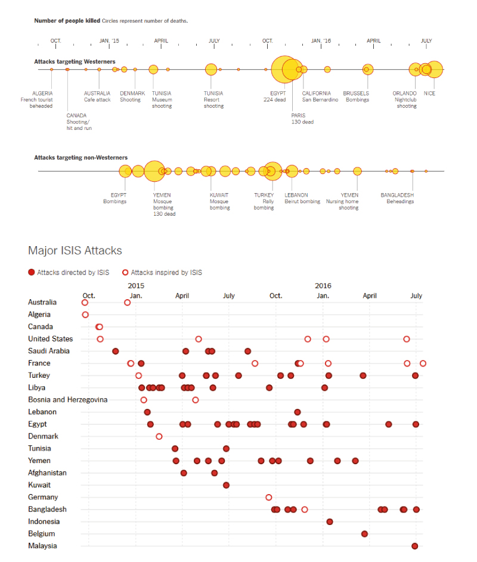
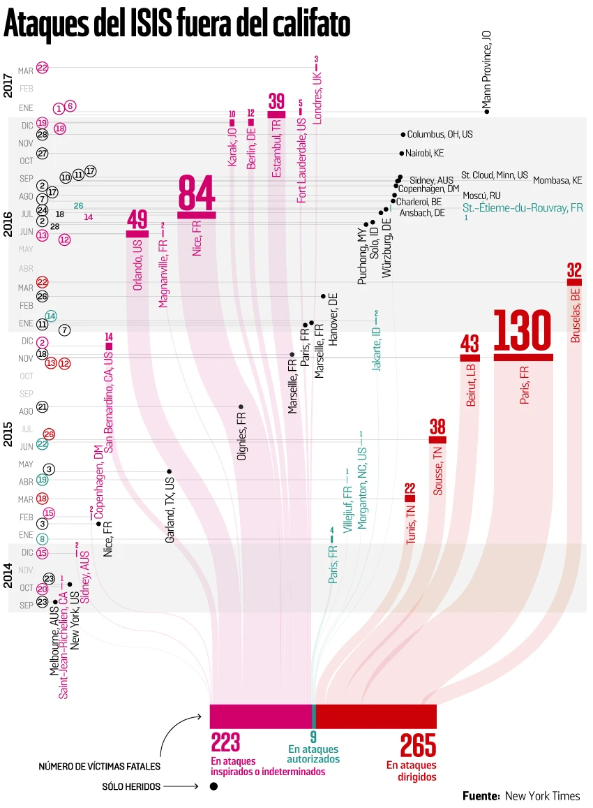

Ataques del ISIS fuera del califato
Editorial InfographicContext
This graphic was developed for a news article analyzing terrorist attacks attributed to ISIS outside the territorial caliphate. The initial reference was a visual published by The New York Times in 2016 that summarized incidents using a bubble chart.
Initial Brief
The original request was to recreate the visual structure of the NYT graphic using updated data. The goal was to present the timeline and geographical distribution of attacks attributed to ISIS.
Discovery
While rebuilding the dataset, I noticed that the incidents could be clearly differentiated by the relationship between the perpetrators and ISIS: attacks directed by the organization, attacks authorized by ISIS, and attacks inspired by ISIS without operational control.
This distinction revealed an important pattern that was not clearly visible in the original visualization.
Design Solution
Instead of replicating the bubble chart, I redesigned the graphic to highlight the relationship between attacks and organizational control.
The visualization separates incidents into three categories and connects them to the total number of attacks, allowing readers to understand how much of the violence was centrally directed versus inspired by the group.
Impact
This insight changed the editorial focus of the article. Rather than simply listing attacks, the story shifted to explain how ISIS influenced global terrorism through different operational models.
Original reference

Redesigned visualization
